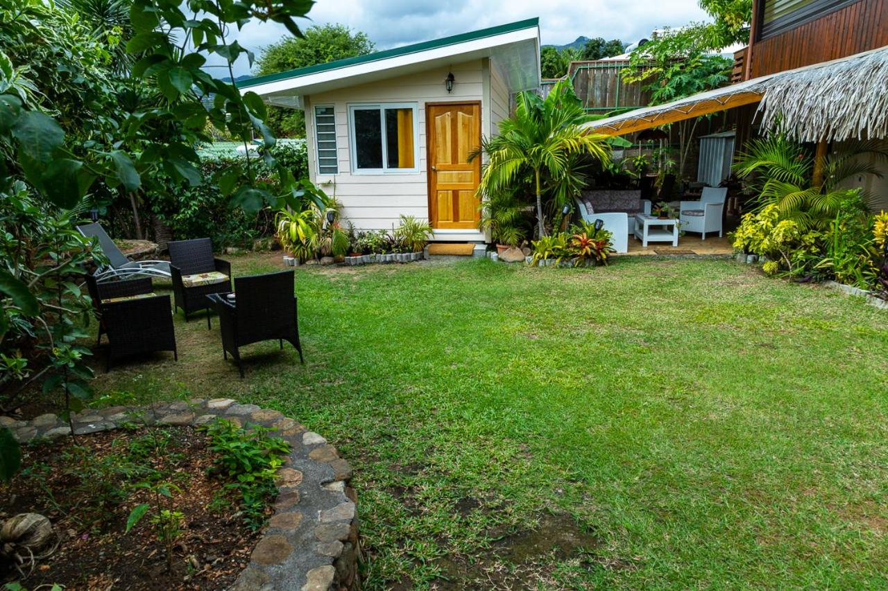

This French island territory in Polynesia is famous for its beautiful beaches ideal for diving, swimming and other sea sports. In its capital, Papeete, you will find interesting architectural attractions such as the Presidential Palace, the High Commissioner's House, the Notre Dame Cathedral and the Gauguin Museum, about the life and works of the famous French painter, Paul Gauguin. The Black Pearl Museum, the only one in the world that exhibits rare gems, including one of the largest in the world, is also in Papeete. You will enjoy the traditional French gastronomy with its exotic flavors of island products, with dishes such as Poisson Cru a la Tahitian, exquisite shrimps marinated with coconut milk and lemon.
Tahiti, France

